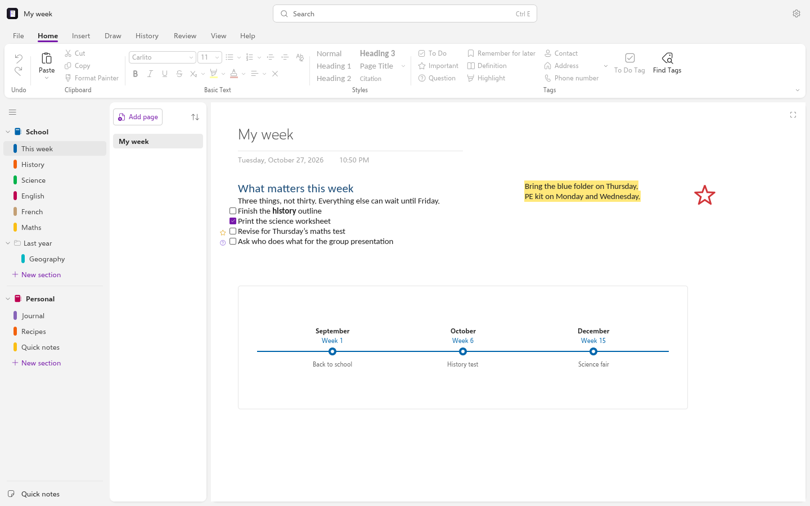
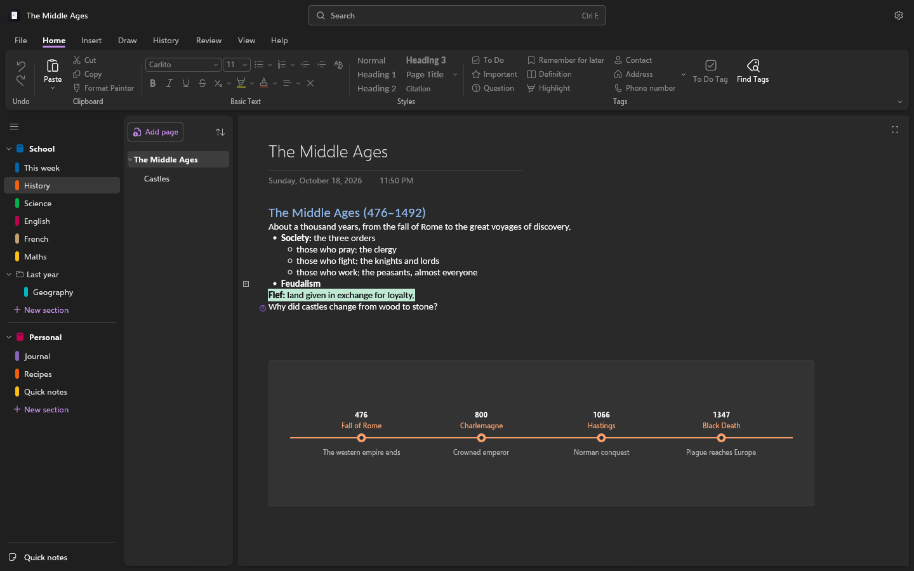
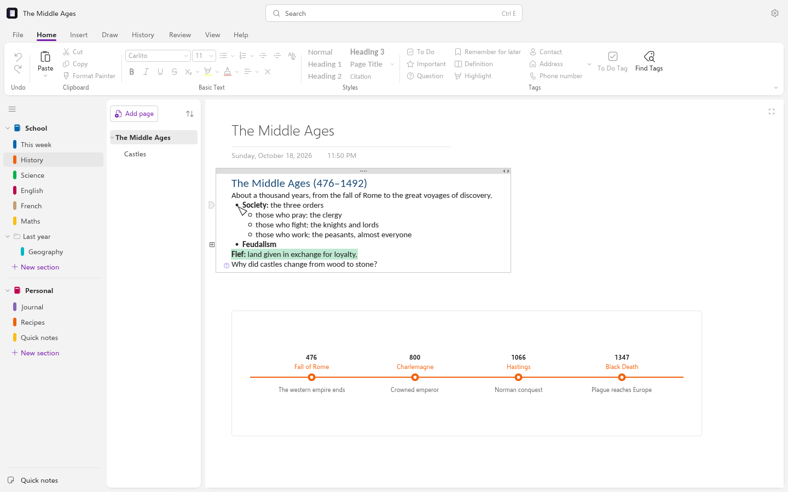
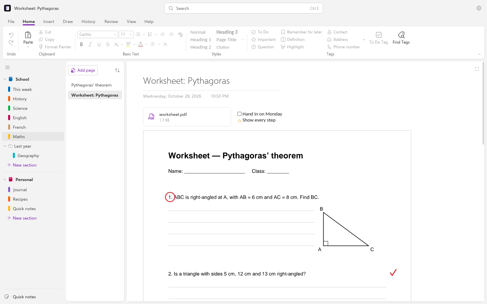
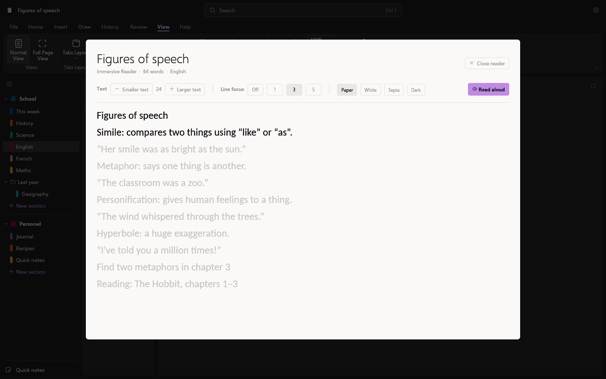
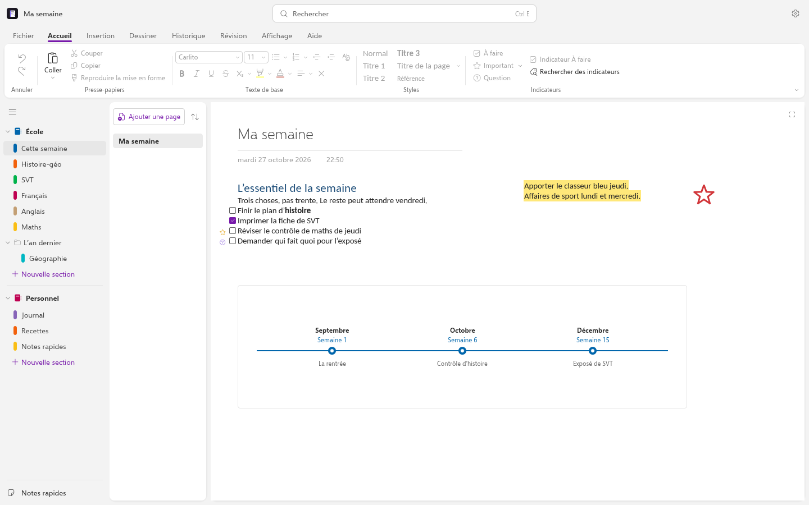

01
Click anywhere.
Notes sit where you put them and widen as you type. Outlines run nine levels deep.
Native notes for Linux, Windows and macOS, without accounts, cloud or telemetry.
Free and open source, MIT OR Apache-2.0


Start where your thought starts. Let the page grow around it.
01
Notes sit where you put them and widen as you type. Outlines run nine levels deep.
02
Pens, highlighters, shapes and Ink to Shape. Annotate a page or sketch a diagram beside it.
03
A PDF page becomes a picture you can write on, and notebook files come in with a report.
04
Immersive Reader changes the size, focus and reading theme, and can read the page aloud.




A note container on hover, with its paragraph handle and tags.
One SQLite database and one attachments folder. Copy it, back it up, keep it, without an account, a sync service or telemetry.
Where your notes liveThe whole notebook. No server to be down.
Folio writes in English and French, with dates, numbers and shortcuts: the way each language names them. The sample notebooks are written for the language.
Translations are built in, and a restart is not needed.
